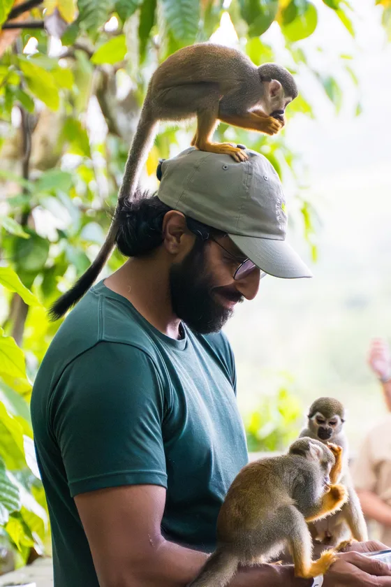
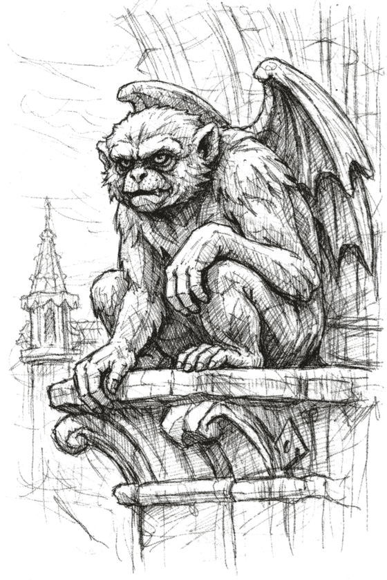

Kashish GargHi! I'm Kashish Garg, a Full-Stack Robotics Engineer
Senior Robotics Engineer at MeshMap Labs. Penn GRASP alum. Based in Brooklyn, NY.
For the past eight years, I've worked across robotics, from electromechanical design and PCB development to mapping, perception, and optimal control. Along the way, I've learned by building, experimenting, and getting my hands dirty. I'm particularly interested in mapping the world around us and developing robots that can take on work that's dull, dirty, or dangerous.
01Projects
02Record
03Notebook
Tutorials, course notes and things I'm still working out. Each entry can open into sub-pages. Entries marked ↗ still live on the old site.

@gibbons_n_gargoylesWildlife Filmmaking and Photography, in urban environments
A Brooklyn wildlife videographer and photographer's films, photographs and running species log from Prospect Park, Central Park, the Bronx and wherever else I can bring a camera.
This volume grew out of FlockBog, a website log I started to keep track of every bird I managed to frame. I began wildlife photography in October 2025 and I started filming in July 2026. I have gone birding and filming in Japan, China, and New Orleans, and yet, my favorite place is Prospect Park, a 10 minute walk from me! Check out my content here and on Instagram/Youtube with the handle @gibbons_n_gargoyles
01Highlights
aVideo
bPhotography
02Gear
What goes into the field with me, packed the way it rides.
Hover a piece to find it in the bag.
03Specimen ledger
| No. | Common | Latin | First logged |
|---|
socials ▾